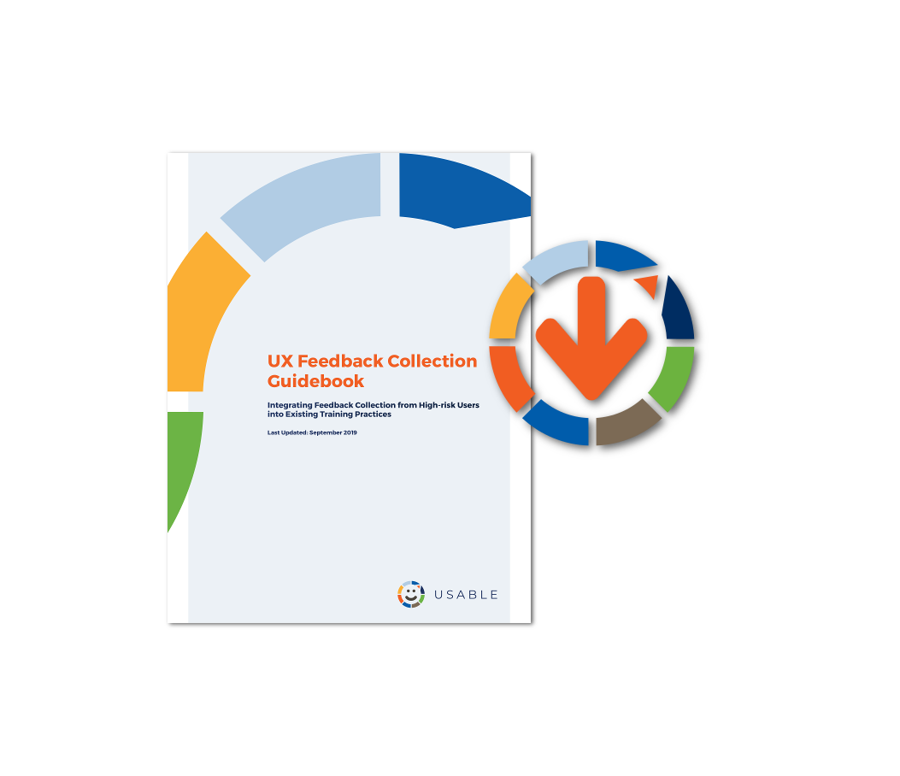
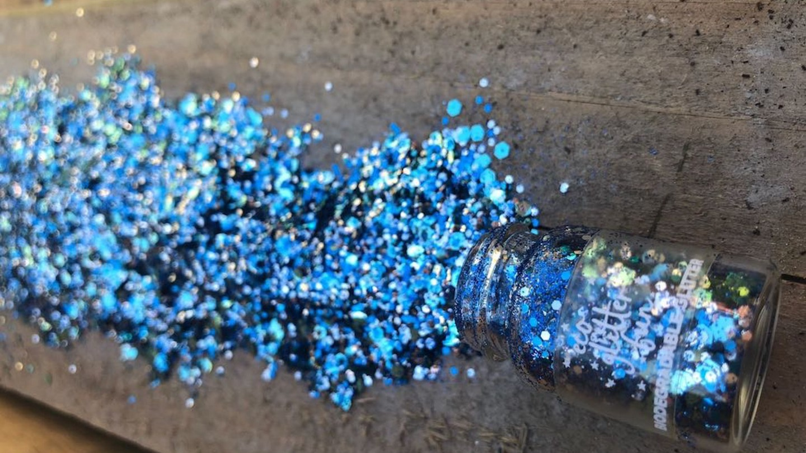

Usable Security Apps By Leveraging End Users
We are building feedback loops across the world, connecting digital security trainers working with at-risk communities, design experts, and open source tool developers. This human-centered design approach to the development of digital security software aims to solve real problems and build better, more usable tools for communities who need them most.
-
HIGHLIGHTS
USABLE's UX Feedback Collection Guidebook Launch!
A compilation of activities to integrate feedback collection from high-risk users into existing training practices to collect relevant and useful feedback from high-risk users that are typically underrepresented in the design and development of open source privacy and security tools.
 -
HIGHLIGHTS
Read our latest blog
Check out our latest personas to better understand your users’ needs.
-
HIGHLIGHTS
USABLE at the Internet Freedom Festival
Connecting with digital security trainers, open source tool teams, and UX experts at IFF in Valencia.

PERSONAS
Meet the Users
Personas, or general profiles or snapshots of end users, play an important role in the tool design process and allow developers to better understand the needs and uses for their products in some of the most challenging environments in the world.